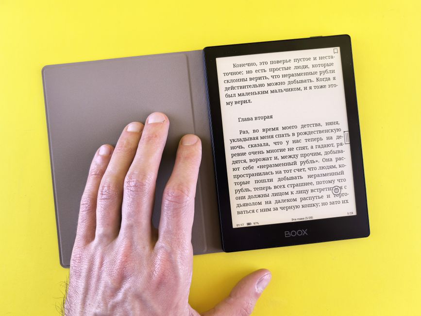
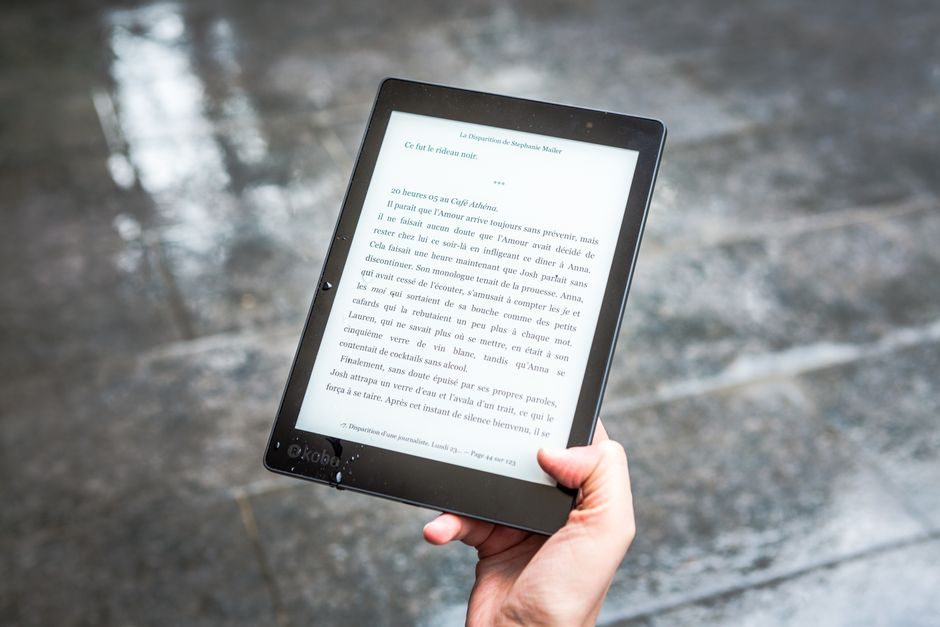
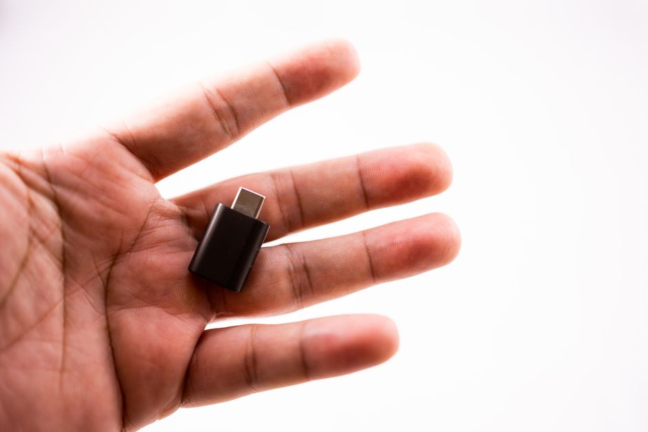
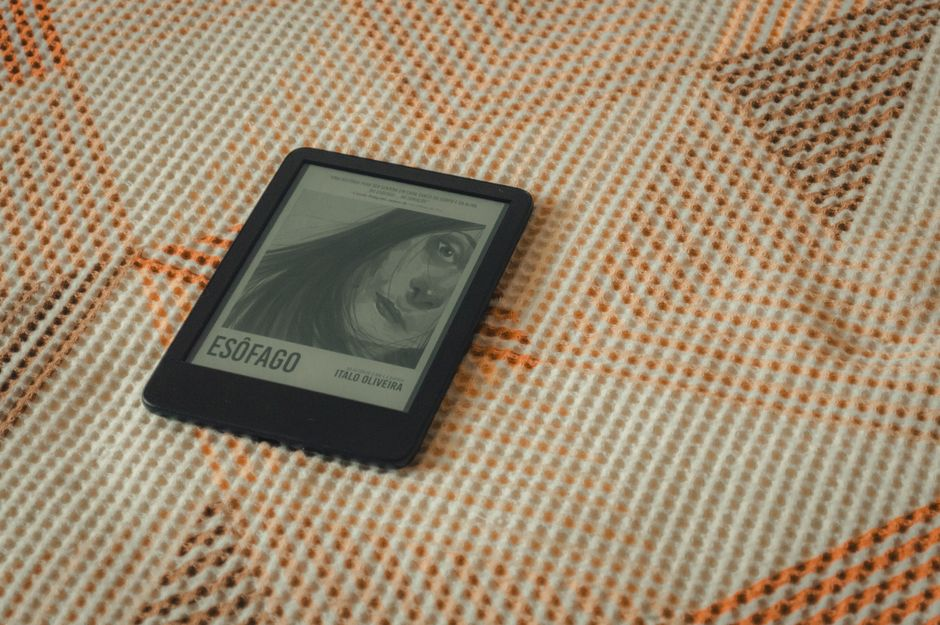
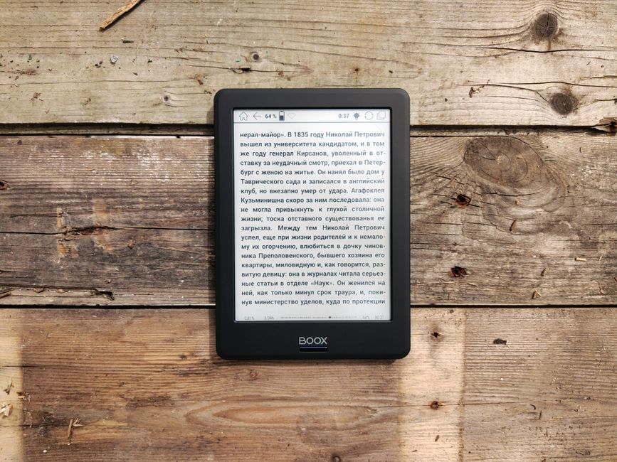
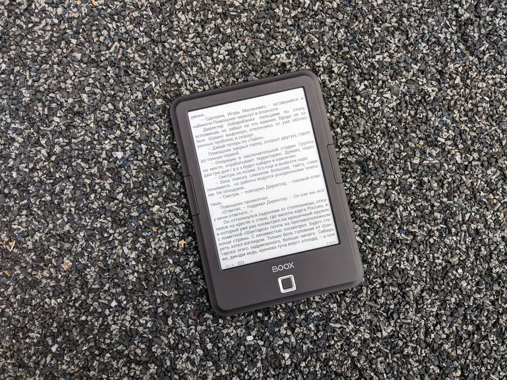
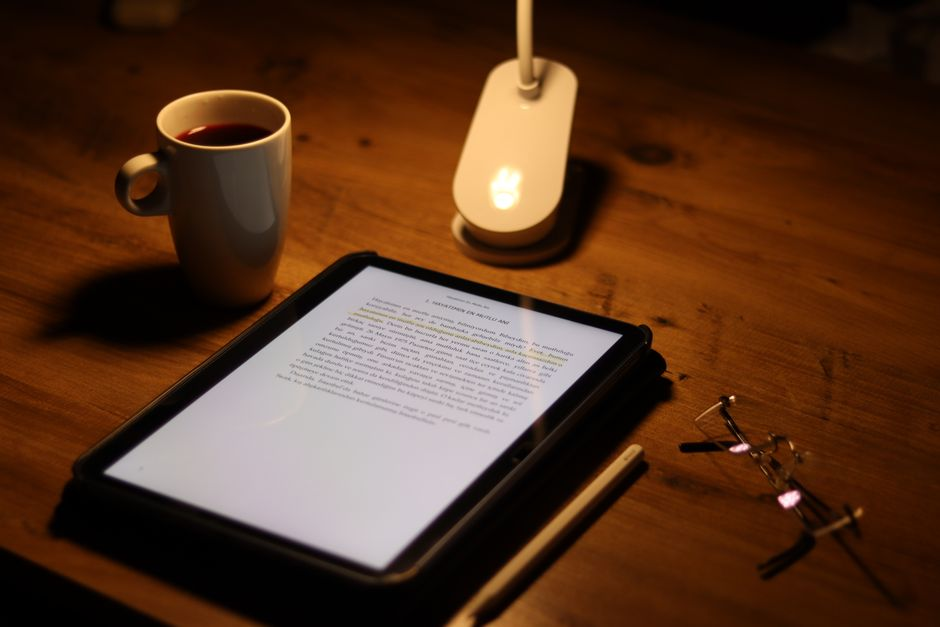
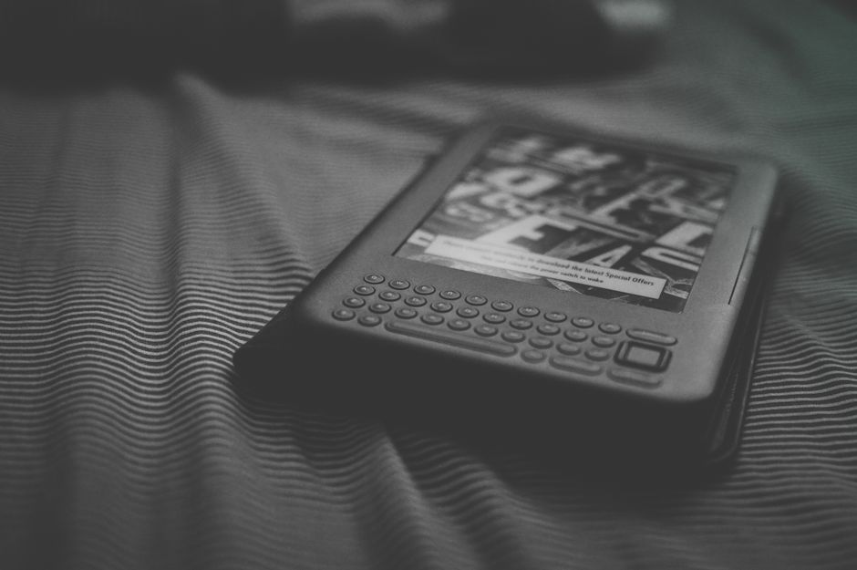

Marcapáginas electrónico con luz led integrada y pantalla e-ink para e-reader
Marcapáginas electrónico con luz LED para tu e-reader. Lee cómodamente sin cansar la vista. Pantalla e-ink integrada. ¡Descúbrelo!
0 vistas

Funda de neopreno con bolsillo para accesorios de e-reader y cables
Funda neopreno acolchada para e-reader con bolsillo para cables y accesorios. Protección resistente y organización en uno. ¡Descubre nuestra colección!
0 vistas

Soporte ajustable de aluminio para e-reader con rotación 360 grados
Soporte ajustable de aluminio para e-reader con rotación 360°. Ligero, resistente y cómodo. Lee en cualquier posición: cama, sofá, escritorio.
0 vistas

Funda impermeable de silicona para e-reader con protección contra agua y polvo
Funda impermeable de silicona para e-reader. Protección total contra agua y polvo. Perfecta para playa y piscina. ¡Compra ahora!
0 vistas

Luz led frontal recargable para e-reader de lectura nocturna
Ilumina tu e-reader sin forzar la vista. Luz LED recargable, perfecta para leer de noche. Diseño compacto y batería de larga duración. ¡Compra ahora!
0 vistas
Batería externa solar de alta capacidad para cargar e-readers y tablets
Batería externa solar de alta capacidad. Carga tu e-reader, tablet y dispositivos sin enchufes. Energía solar ilimitada para llevar.
0 vistas

Funda tipo libro con cierre magnético y bolsillos internos para e-reader
Fundas tipo libro con cierre magnético para e-reader. Protege tu dispositivo con estilo. Bolsillos internos y diseño práctico. ¡Compra ahora!
0 vistas

Funda con almacenamiento de tarjetas microsd y adaptadores usb-c para e-reader
Funda protectora para e-reader con compartimentos para tarjetas microSD y adaptadores USB-C. Organización completa en un estuche.
0 vistas

Funda con teclado bluetooth inalámbrico integrado para e-reader
Funda protectora con teclado Bluetooth inalámbrico integrado. Perfecta para leer y tomar notas en tu e-reader. Comodidad y protección en uno.
0 vistas

Marcapáginas digital con tinta electrónica para e-reader
Marcapáginas digital con tinta electrónica para e-readers. Sincronización automática, sin baterías. Nunca pierdas tu página de lectura.
0 vistas

Funda de neopreno acolchada resistente a caídas para e-reader
Funda neopreno acolchada resistente para e-reader y tablet. Protege tu dispositivo de caídas y golpes. Perfecta para viajes y uso diario.
0 vistas

Tinta electrónica reemplazable para reparación de pantalla de e-reader dañada
Kits de tinta electrónica para reparar pantallas dañadas de e-readers. Restaura la nitidez y funcionalidad de tu dispositivo de forma económica.
0 vistas

Soporte ajustable para e-reader con rotación 360 grados para lectura en cama y escritorio
Soporte rotativo para e-reader. Ajustable a cualquier ángulo para leer cómodo en cama o escritorio. Sin usar las manos. Compra ahora.
0 vistas
Funda impermeable para e-reader con cierre hermético para playa y piscina
Funda impermeable con cierre hermético para proteger tu e-reader en playa y piscina. Disfruta leyendo sin preocupaciones por agua, arena ni salpicaduras.
0 vistas

Luz de lectura recargable usb con pinza para e-reader
Luz recargable USB con pinza para e-reader y Kindle. Ilumina sin cansar las manos. Enfoque perfecto, compacta y versátil. ¡Compra ahora!
0 vistas

Protector de pantalla mate antirreflejos para e-reader
Protector mate antirreflejos para e-reader. Reduce reflejos y disfruta de lectura cómoda sin distracciones. Adhesión directa a pantalla.
0 vistas

Funda de cuero con luz led integrada para kindle
Funda de cuero para Kindle con luz LED integrada. Lee cómodamente de día y noche. Protección premium + iluminación propia. ¡Descubre más!
0 vistas